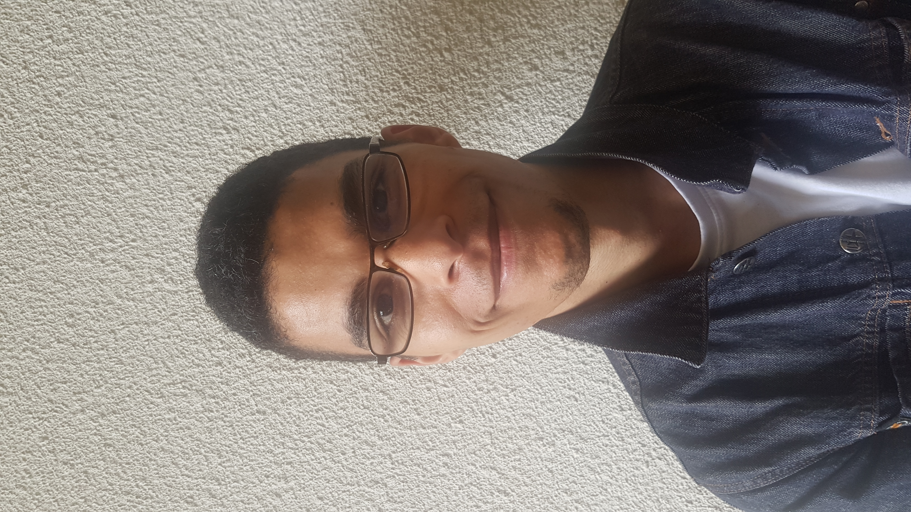

Lucas Aouiche

23 Ans
77/23 RUE DE PARIS A TOURCOING
06.41.23.63.22
laouiche.e2c@gmail.com
Développeur Intégrateur D'applications Web
Recherche d'un stage du 1 au 28 septembre
Diplômes et Formations
D'accompagnement à l'emploi / Ecole de la Deuxième Chance Roubaix,
France Depuis juin 2021
- Définition du projet Professionnel
- Stages en entreprise
- Des savoirs de base
Accompagnement à l'emploi / IMP (Institut Médico Psychologique) Leers Nord,
Belgique
De septembre 2012 à mai 2021
- Stages en entreprise
- Formations en entreprise
Module de spécialisation développeur intégrateur
d'applications web / SIMPLON ROUBAIX De juillet 2021 à septembre 2021
Expression Finalité (équivalent Terminale en France) / Les Trieux Leers Nord,
Belgique
De septembre 2013 à février 2019
Expériences Professionnel
Maraîchage / PAPILLONS BLANCS Linselles, France
De septembre 2020 à octobre 2020
- Ramasser.
- Trier.
- Laver.
- Peser.
- Emballer.
- Livrer les légumes.
AlterEos Tourcoing, France
Octobre 2017
Tri de document ( la main )
Ouverture dans enveloppe pour SFR.
Bouygues ou autre
Repérage des donnée ( la main )
Stage d'Acteur amateur / l'Oiseau Mouche Roubaix
Mars 2021
Création d'une histoire à partir de photos
la fin du stage on devait faire une présentation d'une petite pièce de théâtre devant la troupe
Ouvrier de recyclage électronique / Defabnord Tourcoing, France
De septembre 2018 à octobre 2018
Démontage de électronique ou électroménager
Informatique
- Robotique avec E2C
et démonter un Robotique le programmer pour qu'il
évite les obstacles et sa s'arrête sur une feuille
- HTML et CSS
prendre connaisance des balises de base
Atouts
- Volontaire
- Fiable
- Curieux
- Ouvert
Voyage
Centres d'intérêt
- Littérature
- Programmation